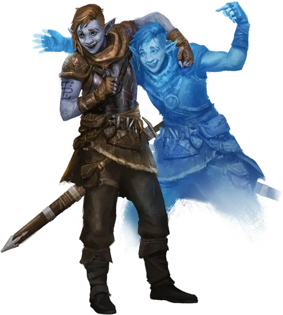

Фирболг-странник
Firbolg Wanderer
Средний Гуманоид (Жрец), любое мировоззрение

Класс Доспеха 16 (кираса)
Хиты 90 (12к8 + 36)
Скорость 30 футов
| мод | спас | ||
|---|---|---|---|
| СИЛ | 16 | +3 | +3 |
| ЛОВ | 14 | +2 | +5 |
| ТЕЛ | 16 | +3 | +3 |
| мод | спас | ||
|---|---|---|---|
| ИНТ | 14 | +2 | +2 |
| МДР | 17 | +3 | +3 |
| ХАР | 16 | +3 | +6 |
Навыки Восприятие +6, Скрытность +5, Убеждение +6
Чувства пассивное Восприятие 16
Языки Общий, Великаний
Опасность 5 (1800 опыта)
Бонус мастерства +3
Действия
Мультиатака. Фирболг совершает две атаки Длинным мечом, Колдовской стрелой или их комбинацией.
Длинный меч. Рукопашная атака оружием: +6 к попаданию, досягаемость 5 фт., одна цель. Попадание: 7 (1к8 + 3) рубящего урона или 8 (1к10 + 3) рубящего урона при использовании двумя руками, плюс 9 (2к8) урона психической энергией.
Колдовская стрела. Дальнобойная атака заклинанием: +6 к попаданию, дистанция 60 футов, одно существо. Попадание: 10 (2к6 + 3) урона психической энергией и цель должна преуспеть в спасброске Харизмы Сл 14 или станет очарованой до начала следующего хода цели.
Использование заклинания. Фирболг накладывает одно из следующих заклинаний, используя Мудрость в качестве базовой характеристики (Сл спасброска от заклинания 14):
• неограниченно: волшебная рука [mage hand], малая иллюзия [minor illusion], жуткий смех Таши [Tasha's hideous laughter]
• 1/день каждое: обнаружение магии [detect magic], маскировка [disguise self], рассеивание магии [dispel magic], превращение [polymorph]
Бонусные действия
Двусмысленное движение (1/день). Фирболг проецирует иллюзорную копию себя в незанятое пространство, которое он может видеть в пределах 30 футов от себя. Затем фирболг может поменяться местами с иллюзией. Иллюзия исчезает через 1 минуту, если фирболг недееспособен или если иллюзия находится на расстоянии более 120 футов от фирболга.
Бонусным действием, на последующих ходах, фирболг может переместить иллюзию на расстояние до 30 футов, а затем поменяться с ней местами.
Описание
Дальние родственники великанов, первые фирболги бродили по первобытным лесам мультивселенной, и магия этих лесов сплелась с душами фирболгов. Спустя века эта магия всё ещё звенит внутри фирболгов.
Фирболгов часто привлекает служить Дианкастре и Хьяти или подражание им. Врожденная магия фирболгов, заключающаяся в скрытности и хитрости, перекликается с коварной находчивостью Дианкастры. Традиционный акцент на общности и гармонии побуждает многих фирболгов посвятить себя служению Хьяти.
Фирболг-странник
Фирболги, вдохновленные сагой о великаньем боге Дианкастре, отправляются в приключения, чтобы создать свои собственные легенды. Эти странники используют свою магию для обмана и маскировки, чтобы подражать Дианкастре.